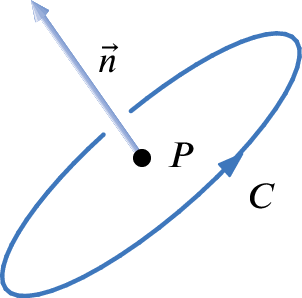
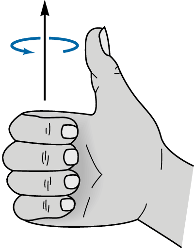

Section 3 Key Concepts
The Curl of a Vector Field.
-
Circulation Density - The circulation density of \(\vec{F}\) at a point \(P\) in the direction of a unit vector \(\vec{n}\) is a scalar measurement of the strength of circulation (or rotation) of \(\vec{F}\) around \(P\) perpendicular to \(\vec{n}\text{,}\) see Figure 3.1, in the direction determined by the right hand rule, see Figure 3.2. It is:
Positive if \(\vec{F}\) induces a rotation around the point \(P\) in the direction given by the right hand rule (think of placing a little paddle at \(P\text{,}\) will the vectors close to \(P\) force the paddle to rotate? If so, in which direction?) The stronger the rotation, the larger the magnitude of the curl.
Negative if \(\vec{F}\) induces a rotation around the point \(P\) in the opposite direction given by the right hand rule (think of placing a little paddle at \(P\text{,}\) will the vectors close to \(P\) force the paddle to rotate? If so, in which direction?) The stronger the rotation, the larger the magnitude of the curl.
\(0\) if there if there is no induced rotation around \(P\text{.}\)
A. 
Figure 3.1. Rotation around point \(P\) perpendicular to \(\vec{n}\) B. 
Figure 3.2. When the thumb points in the direction of \(\vec{n}\text{,}\) the fingers curl in the direction of positive circulation density. -
Geometric Definition of Curl - The curl of a vector field \(\vec{F}\) in \({\mathbb R}^3\) at a point \((x,y,z)\) and denoted \({\rm curl} (\vec{F})((x,y,z))\) is defined to be the vector with the following properties:
It points in direction of greatest circulation density at \((x,y,z)\text{.}\)
Its magnitude is equal to the circulation density at \((x,y,z)\text{.}\)
-
Algebraic Definition of Curl - For \(\vec{F} =P\vec{i} +Q\vec{j} +R\vec{k}\) we define
\begin{gather*} {\rm curl} (\vec{F})=\nabla \times \vec{F} \\ =\bigg( \frac{\partial R}{\partial y} -\frac{\partial Q}{\partial z} \bigg) \vec{i}-\bigg( \frac{\partial R}{\partial x}-\frac{\partial P}{\partial z} \bigg) \vec{j}+\bigg( \frac{\partial Q}{\partial x}-\frac{\partial P}{\partial y}\bigg) \vec{k}. \end{gather*} -
The Scalar Curl - Though curl is defined for vector fields in \({\mathbb R}^3\text{,}\) it will be useful to have a compatible definition in \({\mathbb R}^3\text{.}\)
Geometric Definition of the Scalar Curl - The scalar curl of \(\vec{F} =P\vec{i} +Q\vec{j}\) around the point \((x,y)\) is a scalar measurement of the counterclockwise rotation of \(\vec{F}\) around \((x,y)\text{.}\) It is positive if the vectors in \(\vec{F}\) generally flow counterclockwise around \((x,y)\text{,}\) and negative if they flow clockwise.
-
Algebraic Definition of the Scalar Curl - For \(\vec{F} =P\vec{i} +Q\vec{j}\text{,}\) we define the scalar curl of \(\vec{F}\) as
\begin{equation*} {\rm curl} (\vec{F})=\displaystyle \bigg( \frac{\partial Q}{\partial x}-\frac{\partial P}{\partial y} \bigg)\text{.} \end{equation*}
If \({\rm curl} (\vec{F})((x,y,z))=\vec{0}\) at a point \((x,y,z)\text{,}\) we say \(\vec{F}\) is \(irrotational\) at \((x,y,z)\text{.}\) If \(\vec{F}\) is irrotational at all points, we say it is a \(curl free\) vector field.
A vector field \(\vec{G}\) is called a \(curl field\) if it is the curl of some other field \(\vec{F}\) i.e. \(\vec{G} ={\rm curl} (\vec{F})\text{.}\)
If \(f(x,y,z)\) has continuous second order partial derivatives then \({\rm curl} (\nabla f) =\vec{0}\text{.}\) If \(f(x,y)\) has continuous second order partial derivatives then \({\rm curl} (\nabla f) =0\text{.}\) In particular, this tells us that a vector field with non-zero curl cannot be conservative.
The Divergence of a Vector Field.
-
Geometric Definition of Divergence - The divergence of a vector field \(\vec{F}\) at a point \((x,y,z)\) is a scalar measurement of the flow of the vectors in \(\vec{F}\) through \((x,y,z)\text{.}\) It is:
Positive if the vectors in \(\vec{F}\) generally flow away from \((x,y,z)\text{,}\) and the stronger the flow away, the larger the magnitude.
Negative if the vectors in \(\vec{F}\) generally flow into \((x,y,z)\text{,}\) and the stronger the flow into \((x,y,z)\text{,}\) the larger the magnitude.
\(0\) if there if there is no flow in or out of \((x,y,z)\text{,}\) or if the flow into \((x,y,z)\) cancels with the flow out of \((x,y,z)\text{.}\)
Algebraic Definition of Divergence - For \(\vec{F} =P\vec{i} +Q\vec{j} +R\vec{k}\) we define \({\rm div} (\vec{F})=\frac{\partial P}{\partial x} +\frac{\partial Q}{\partial y} +\frac{\partial R}{\partial z}\text{.}\) More generally, for a vector field \(\vec{F}\) in any dimension, we define \({\rm div} (\vec{F}) =\nabla \cdot \vec{F}\text{.}\)
If \(\vec{F}(x,y,z)\) has continuous second order partial derivatives then \({\rm div (curl} \vec{F} )=0\text{.}\) In particular, this tells us that a vector field with non-zero divergence cannot be a curl field.